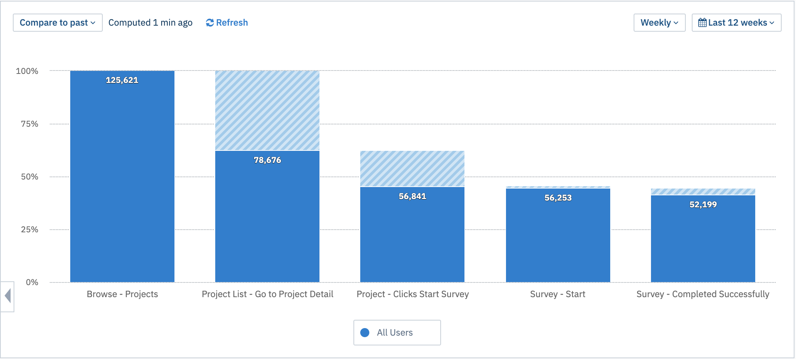
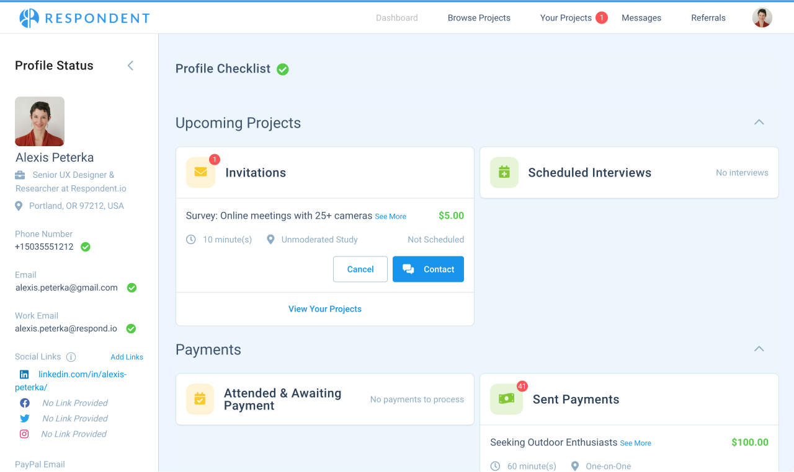
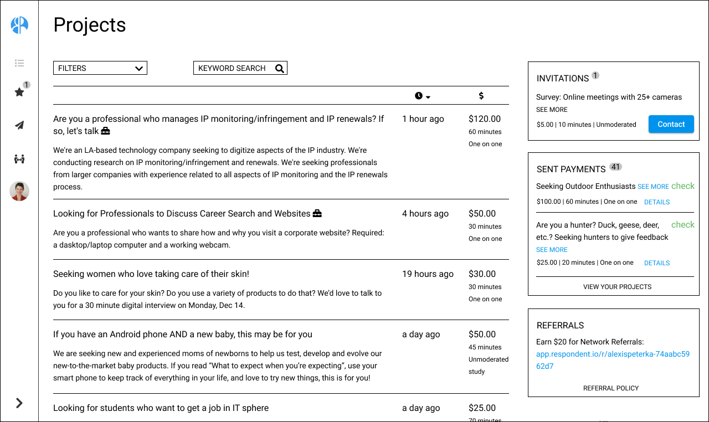

Respondent Participant Retention, 2020
Skills
- Quantitative research
- Qualitative research
- UX/UI design
Tools
- Amplitude
- Figma
Artifacts
- Analytics
- Wireframes
- Mockups
Problem
Respondent relies on a two-sided marketplace of researchers seeking research participants and active, high quality research participants to ensure liquidity and provide value. While participants were able to sign up and create an account with little drop off, we struggled to retain participants and keep them engaged by applying to research projects.
As part of my research to create user personas, I learned that participants found our “Recommended” filter unhelpful, often hiding research projects that they were eventually invited to participate in. The ratio of projects participants applied for to projects they were invited to was so low, they were disincentivized from applying.
We used Amplitude to track the conversion funnel for participants browsing projects and applying by completing project screeners (the part of the user journey with the highest drop off rate).

Solution
The participant’s first page after logging in is the Dashboard. On desktop, there are no projects visible to the user above the fold because sections of other information are expanded by default. The priorities in redesigning the dashboard page was to drive retention by informing returning users of actions they need to take on their projects, and surfacing projects for the user to apply for. Based on what I learned through Persona research, metrics, and testing, I set these hypotheses:
- Editing profile is something that users do rarely, and we discourage doing often, so I deprioritized this action.
- By promoting projects on the Dashboard, I was able to eliminate the “Browse Projects” page.
- Only show “modules” with actionable tasks, and hide or deprioritize other modules, using this space to promote referrals.
- I eliminated rarely-used sort options (best match and shortest time) and collapsed rarely used filters under a labelled dropdown.
- Collapsing top and left nav will reduce confusion - everything in one place - and frees up space to direct participants to actions we want them to take, like applying for projects and referrals.
- Ability to expand leftnav - user action/preference is remembered and persisted.


Result
After iterating on wireframes, I created a series of mockups based on our existing design system while also creating new UI for elements such as an expanding filter panel.
While the team conducts experiments to determine whether small tweaks to filters will improve retention, the design and research team can begin validating these designs with users so we can evaluate which solutions will be most effective. This also gives the data team the opportunity to expand which user actions we’re tracking so we can back up our hypotheses with data.